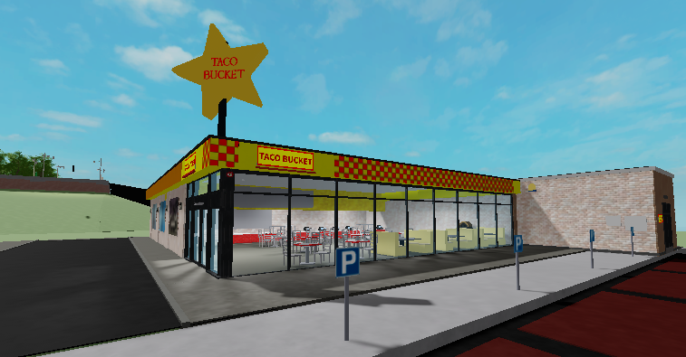
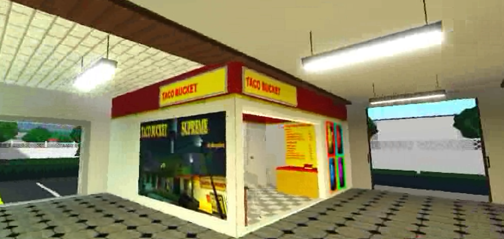

OVER A DOZEN LOCATIONS IN MULTIPLE GAMES!

TacoBucket Golden City Outskirts
Main game: Unknown
Game link: Novelian Encyclopedia
Established: 1993
Taken from the Novelian encyclopedia: Originally converted from a warehouse. This was Taco Bucket's oldest ever restaurant operating under Jerseth Entertainment. It was Taco Bucket's first appearance in Novelia and continues to serve customers today.

TacoBucket Agane City
Main game: Unknown
Game link: Novelian Encyclopedia
Established: Unknown
While it is unknown when this location first opened, from the image it appears to be during the late 90's to early 2000's. It was built to serve tacos to Golden City's neighbour, Agane City.

TacoBucket Retuff
Main game: Unknown
Game link: Novelian Encyclopedia
Established: 2012
This is one of the last Taco Bucket locations documented in the Novelian encyclopedia, there is very little information about the Retuff location, other than the fact that it was a small restaurant located next to the Retuff Hospital. It is unknown wether this location operates today

TacoBucket Riverside
Main game: Left4Dead2
Game link: Left 4 Dead Custom Campaign
Established: 2009
A custom campaign map on Left4Dead2 created by AlwaysToast. Was believed to be built in 2013 but set in 2009 during the Left 4 Dead Zombie Apocalypse. The location is no longer habitable but remains open.

TacoBucket Supreme
Main game: Left4Dead2
Game link: Left 4 Dead Custom Campaign
Established: 2013
Another custom campaign map on Left4Dead2 created by AlwaysToast. This time it is larger and has the famous jukebox that offered some epic music that was so good that even zombies liked it.

Kai Island
Main game: Twizel Town
Game link: Twizel Town, Roblox
Established: 2023
The first TacoBucket in Roblox. Built in Kai Island of Twizel Town during the island's development. It was located near the city port and was an attractive stopover among hungry tourists and was connected to the main island via the P1 BRT Line

PineView Mall
Main game: Welcome to Bloxburg
Game link: Welcome to Bloxburg, Roblox
Established: 2024
The first branch in Bloxburg nestled in the PineView Mall. It included a modified menu that was compatible with bloxburg's food. Unfortunatley, PineView Mall officially closed down due to brankrupcy, lack of customers, and structual issues. TacoBucket reopens in the same location as a standalone restaurant

Brubalo Plaza
Main game: Welcome to Bloxburg
Game link: Welcome to Bloxburg, Roblox
Established: 2024
This TacoBucket is located in the brubalo plaza, a multi-use hotel building with a shopping space on the ground floor. It was primarily visited by the fellow residents and hotel goers of the plaza

Cobblestone Mall
Main game: Welcome to Bloxburg
Game link: Welcome to Bloxburg, Roblox
Established: 2025
This TacoBucket is located in the Cobblestone Mall, situated in the center of Laguna City. It is the smallest TacoBucket location yet, measuring a mere 6x4 metres in size
Brublandia Grand Mall
Main game: Welcome to Bloxburg
Game link: Welcome to Bloxburg, Roblox
Established: 2025
This TacoBucket is located in the food court of the Brublandia Grand Mall, a massive 3 storey shopping mall in Bloxburg
Central City Mall
Main game: City Central [V2]
Established: N/A
This TacoBucket is planned to open in the City Central Mall. A massive 6 storey shopping center built by Ezcah5. Once established, this will be the largest building to ever have a TacoBucket!
Brublandia Grand Mall
Main game: Welcome to Bloxburg
Established: 2025
This TacoBucket is located in the food court of the Brublandia Grand Mall, a massive 3 storey shopping mall in Bloxburg